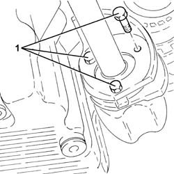
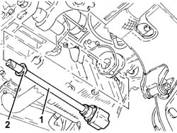
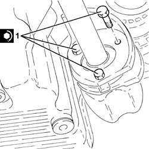
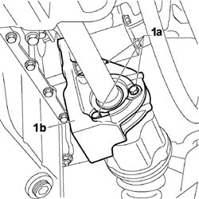
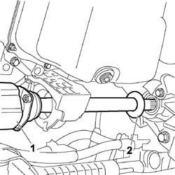
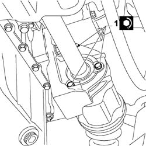

2710A30 intermediate drive shaft - r + r with r/h drive shaft removed
- Path
- Procedures > 27 AXLE > 2710 FRONT AXLE > 2710A drive shafts and joints > 2710A30 intermediate drive shaft - r + r with r/h drive shaft removed
- Kind
- repair procedure (removal / refitting; the operation number is the code)
- Applies to
- engines: 1.3 JTD 16V, 1.9 JTD 8V; all production periods
- Interactive page
- https://sloeber94.github.io/elrnDB-fDbl/en/#/2584608
Applies to: engines: 1.9 JTD 8V; all production periods
 Removing
Removing
 Refitting
Refitting1. Undo the bolts fixing the intermediate driveshaft to the support.

Applies to: engines: 1.9 JTD 8V; all production periods
1. Remove the intermediate driveshaft.
2. Remove the dust excluder.

Applies to: engines: 1.9 JTD 8V; all production periods
Refitting
RemovingPlace the intermediate driveshaft, complete with dust excluder, back in its housing.
1. Tighten the bolt fixing the intermediate driveshaft to the support to the recommended torque.
 | Fastening | Component | Ø | Value (daNm) |
|---|---|---|---|---|
1 | - | - | - | - |

Applies to: engines: 1.3 JTD 16V; all production periods
Removing
Refitting1. Undo bolts (1a) securing the intermediate drive shaft to mount (1b).

Applies to: engines: 1.3 JTD 16V; all production periods
1. Withdraw and emove the intermediate driveshaft with mount.
2. Remove the dust cover from the intermediate drive shaft.

Applies to: engines: 1.3 JTD 16V; all production periods
Refitting
RemovingPlace the intermediate driveshaft, complete with dust cover, back in its housing, taking care not to damage the differential side seal.
1. Tighten the bolts securing the intermediate driveshaft to the support to the recommended torque.
| Fastening | Component | Ø | Value (daNm) |
|---|---|---|---|---|
1 | - | - | - | - |
